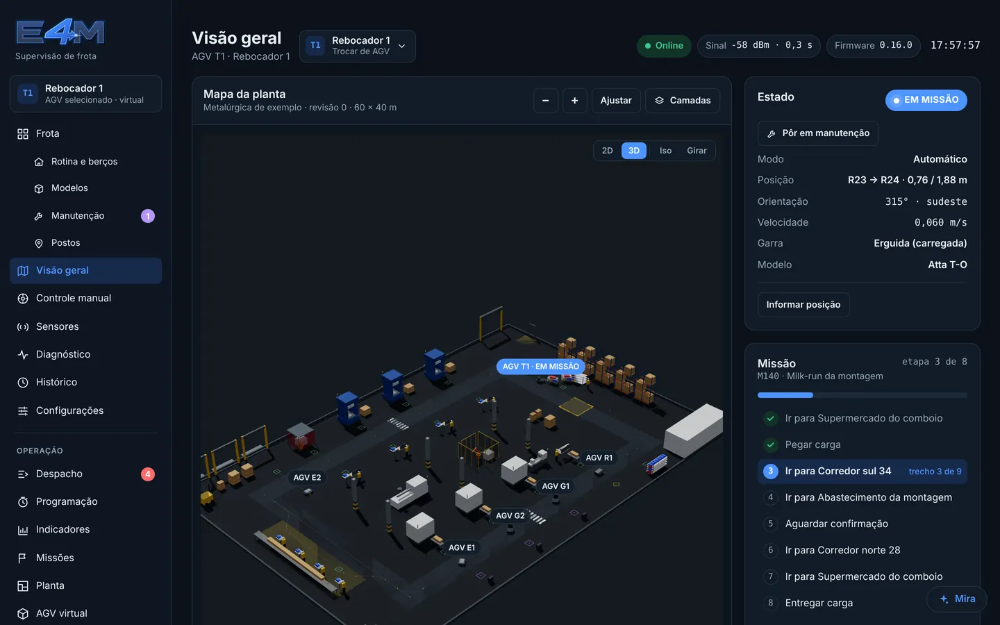
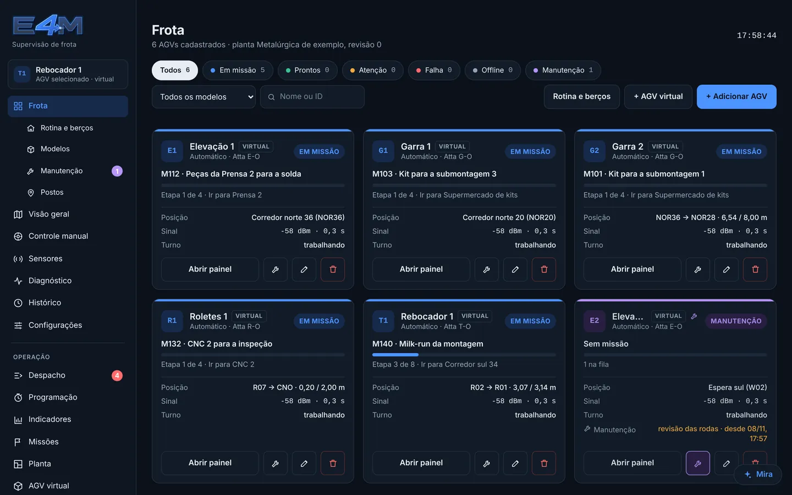
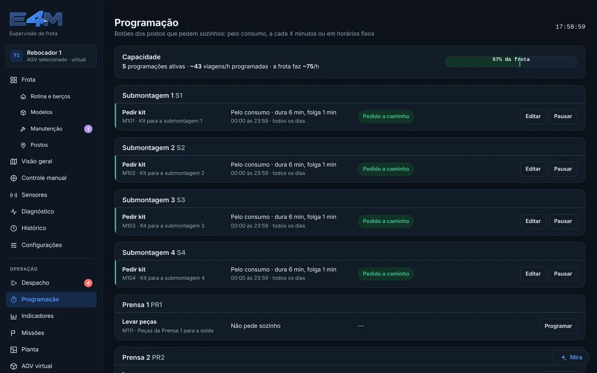
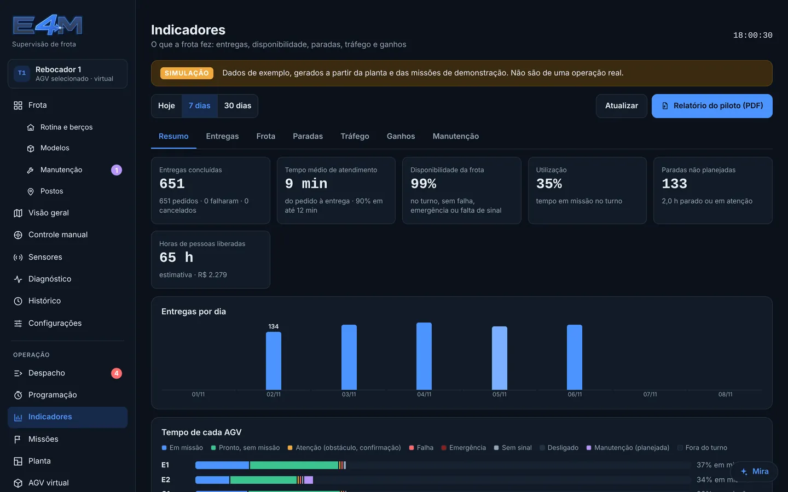
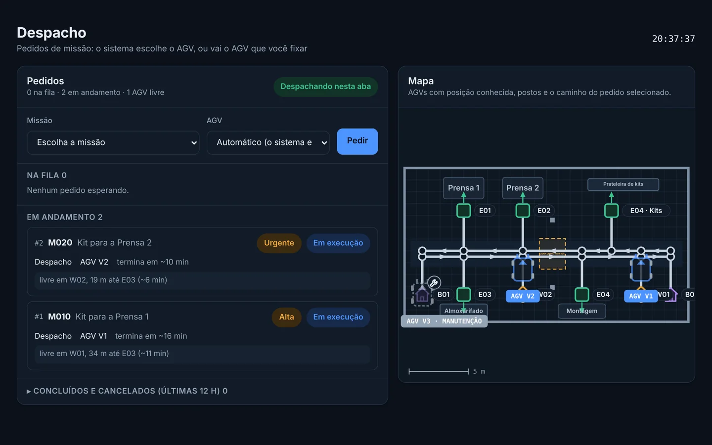
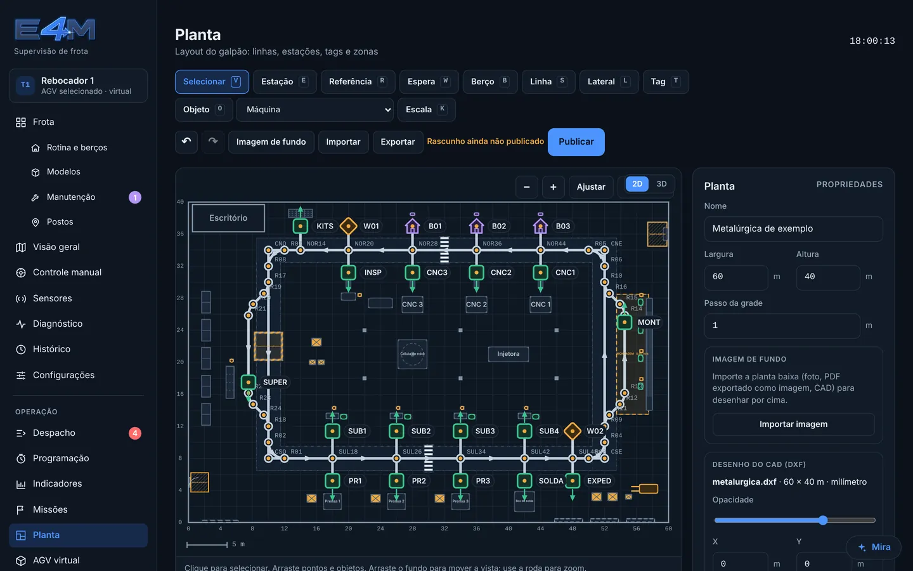
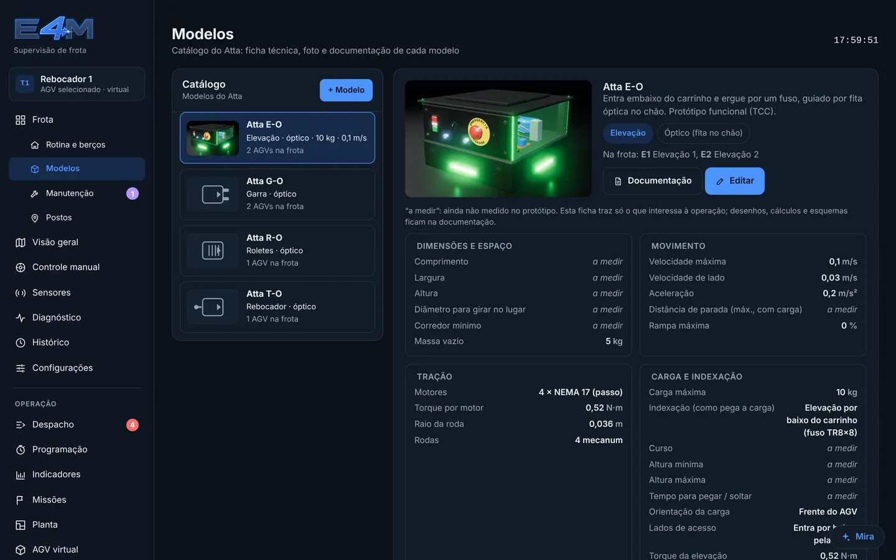
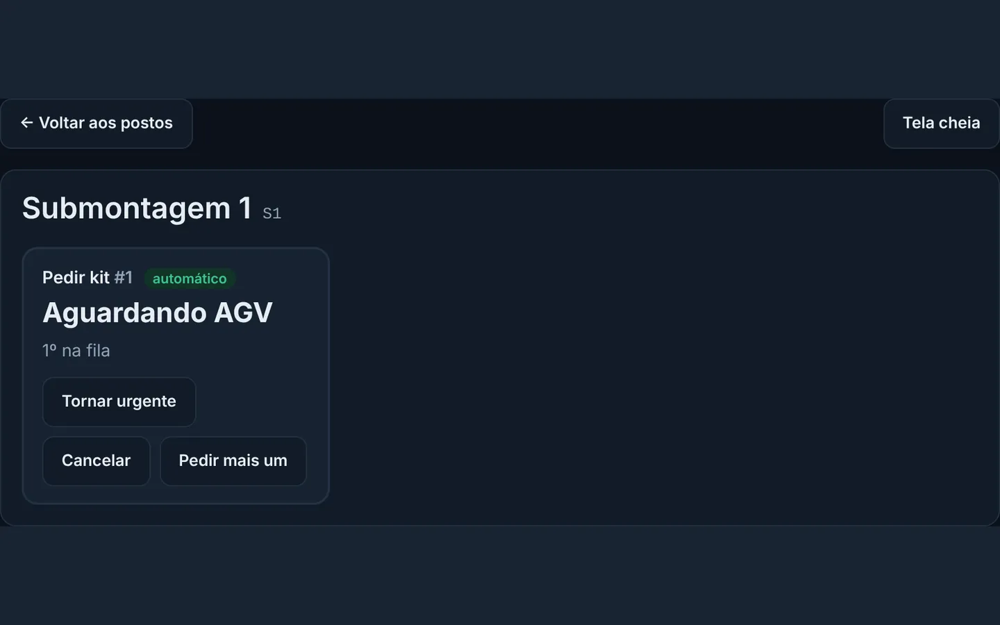

Sinalização com as cores da empresa
A legenda de cada luz do Atta, com o que fazer e quem resolve, e um cartaz para imprimir. O administrador escolhe as cores de operação para a planta inteira; os avisos de segurança ficam travados.
O Eciton recebe os pedidos dos postos (ou pede sozinho, no ritmo do consumo), escolhe o Atta certo, organiza a fila e coordena o tráfego. A sua planta vira um gêmeo digital em 3D e os indicadores mostram o que a frota rendeu. Tudo pelo navegador, no computador ou no celular.
Por que Eciton? É o gênero das formigas de correição. Elas organizam o próprio trânsito: formam faixas de ida e de volta para não congestionar, sem ninguém no comando. É o que o Eciton faz com a sua frota.
Cada posto da fábrica tem um tablet com os seus botões, como "Pedir kit" ou "Levar vazio". O pedido chega ao Eciton, que olha a frota inteira e manda o Atta que pode atender mais rápido.
Uma missão diz o que fazer, passo a passo: sair do berço, ir ao almoxarifado, prender o kit, levar até o posto, soltar. Os pedidos que chegam entram na fila e saem na ordem certa. O urgente passa na frente.
Você diz quanto tempo o material dura no posto. O Eciton mede quanto leva cada viagem e pede na hora certa, para o Atta chegar antes de acabar. Ninguém precisa lembrar de apertar.
Um calendário para a fábrica inteira: os turnos, o almoço e o jantar (a frota vai para o berço e volta sozinha no fim) e as paradas planejadas, como feriado e inventário. Cada Atta escolhe em que turnos trabalha. Na hora certa ele sai sozinho; perto do fim, termina a entrega que está fazendo e só depois volta para o berço. Quem cumpre é o próprio veículo, mesmo com o site fechado.
Você importa o DXF que a fábrica já tem (ou uma imagem do layout), alinha por dois pontos e desenha as rotas por cima. Com um clique a planta fica em 3D, com as suas máquinas e a frota andando. O mesmo mapa é a tela de acompanhamento e a base da simulação.
Um controlador pequeno na parede liga a frota ao que já existe no prédio: as portas automáticas que você já tem, o semáforo do cruzamento com a empilhadeira e o alarme de incêndio. Integração com elevadores em projeto, para hospitais e hotéis.
O Estudo de frota simula o turno inteiro na planta da sua fábrica e acha a menor frota que entrega no prazo, com a previsão para quando a produção crescer. Depois, um Atta virtual roda o mesmo programa do Atta de verdade, na mesma planta, para conferir a frota escolhida antes de qualquer instalação.
Velocidade média de 0,8 m/s, referência de mercado para áreas com pessoas. Faça a sua conta no configurador rápido; a simulação na sua planta dá o número certo.
A legenda de cada luz do Atta, com o que fazer e quem resolve, e um cartaz para imprimir. O administrador escolhe as cores de operação para a planta inteira; os avisos de segurança ficam travados.
Onde o Wi-Fi está fraco, onde os Atta esperam no tráfego, onde param por obstáculo, onde a fita está gasta e quanto cada posto espera pela entrega. Antes que vire parada de linha.
A corrida das tags: o Atta (ou um leitor USB) passa pela fita e cada etiqueta RFID vai para o seu ponto na planta, na sequência certa. O Eciton avisa tag repetida ou fora do lugar.
Visita, auditoria, DDS ou obra: um toque pausa a frota inteira (cada Atta para no próximo ponto) ou baixa a velocidade por um tempo. Uma faixa no topo de todas as telas avisa quem está olhando.
Entregas, disponibilidade, onde o tempo foi e quanto tempo de gente ficou livre para produzir. Por dia, por semana, por posto e por veículo, e o relatório do piloto sai pronto em PDF.
Esperando passagem subiu? O cruzamento da prensa pede um desvio, e a simulação mostra quanto ganha.
A Mira conhece o Eciton de ponta a ponta e enxerga o que está acontecendo agora na frota. Responde em português, curto e direto, para quem opera, mantém ou gerencia. Ela não mexe em nada sozinha.
De mirar: olhar com atenção e apontar onde está o problema, que é o trabalho dela no meio da frota. E Mira também é o nome de uma estrela, a "maravilhosa" da constelação da Baleia, que fica mais brilhante de tempos em tempos: discreta no dia a dia, aparece quando precisa. Ao lado do Eciton e do Atta, que são formigas, ela é quem olha a colônia de cima.
Controle do veículo, parâmetros, emergência, planta e usuários ficam sempre com as pessoas. Toda ação sugerida pela Mira e confirmada fica registrada com o nome de quem confirmou.
G1 está parado (obstáculo) há 4 min em SUL26.
Além de despachar e organizar a frota, o Eciton é onde a equipe acompanha, resolve e confere. Escolha uma opção para ver.
| Admin. | Operador | Manut. | Líder | Visual. | Posto | |
|---|---|---|---|---|---|---|
| Ver frota, mapa, histórico e indicadores | ✓ | ✓ | ✓ | ✓ | ✓ | — |
| Comandar veículos e rodar missões | ✓ | ✓ | — | — | — | — |
| Criar e editar missões | ✓ | ✓ | — | — | — | — |
| Pedir missões | ✓ | ✓ | — | — | — | do seu posto |
| Marcar pedido urgente | ✓ | ✓ | — | ✓ | — | com PIN |
| Planta, veículos, postos e atualização | ✓ | — | — | — | — | — |
| Manutenção, diagnóstico e calibração | ✓ | — | ✓ | — | — | — |
| Usuários | ✓ | — | — | — | — | — |
Cada Atta guarda na memória a missão que está fazendo e a fila dele, e continua a viagem. Antes de entrar num cruzamento ou num corredor que divide com outro veículo, ele precisa combinar com a frota: sem conexão, para antes da zona e espera, nunca entra às cegas. Pedidos novos dos tablets aguardam a conexão. Quando a rede volta, tudo segue sozinho.
No Atta E-O, basta uma fita contrastante colada no piso e etiquetas RFID nos pontos de parada. Dá para mudar a rota trocando a fita. A versão magnética (-M, sob encomenda) usa fita magnética, mais resistente a sujeira e ao tráfego de empilhadeira.
O Atta anda mais devagar nas zonas marcadas na planta, para sozinho quando os sensores de distância veem pessoa, carrinho ou outro veículo na frente, e só segue com o caminho livre. O botão de emergência no veículo para tudo, e ele só volta a andar depois que alguém rearma no local.
Passa, com o Eciton I/O: um controlador na parede ligado ao contato da porta (o mesmo do radar ou do botão) e a um sensor de porta aberta. O Atta pede passagem, a porta abre e ele só segue quando o sensor confirma. Se o controlador ficar sem energia ou sem rede, a passagem fica fechada até ele voltar. A segurança das pessoas na porta continua com os sensores da própria porta. Elevador ainda não: depende de integração com o fabricante do elevador.
Hoje não: o Eciton foi feito junto com o Atta e fala a língua dele. Integração com outros veículos está nos nossos planos.
Na nuvem, com cada empresa separada das outras pelo próprio banco de dados. Cada pessoa entra com a própria conta e só faz o que o papel dela permite.
Um toque tira o Atta da operação: ele sai do despacho, não aceita missão e a luz fica branca. O Eciton guarda cópias da configuração de cada veículo, para restaurar numa placa nova, e mostra a documentação do modelo para a equipe de manutenção.
Começamos montando a sua planta no Eciton, a partir do DXF que vocês já têm, e rodando a frota virtual. Com a simulação aprovada, o piloto numa rota real.
MQTT, o protocolo mais usado em Internet das Coisas industrial. Os Atta e o Eciton conversam por um broker MQTT com conexão criptografada (TLS, porta 8883) e certificado conferido. Cada empresa tem as próprias credenciais e só enxerga os próprios veículos. O broker pode ficar na nuvem ou dentro da fábrica: dá para trocar pelo Eciton sem regravar os veículos.
Ainda não temos conector pronto para um MES ou ERP específico. O Eciton recebe pedidos de missão por uma interface aberta, a mesma que os tablets dos postos usam, e devolve o andamento de cada pedido. Por ela, o seu MES pode pedir material e saber quando chegou. A integração com o seu sistema (SAP, TOTVS ou outro) faz parte do projeto do piloto.
Hoje o Atta usa um protocolo próprio sobre MQTT, feito junto com o Eciton. O VDA 5050, padrão europeu de comunicação entre veículos e gestor de frota, também roda sobre MQTT e está nos nossos planos, junto com a versão LiDAR.
Wi-Fi de 2,4 GHz com senha (WPA2) cobrindo as rotas dos veículos. Recomendamos uma rede separada só para eles. Onde o sinal falha, o Atta continua a missão e para antes de cruzamentos e corredores compartilhados até a conexão voltar.
Não para entrada. Os veículos e as telas só fazem conexões de saída: os Atta para o broker (porta 8883) e os navegadores para o Eciton (porta 443, como qualquer site). Nenhum acesso de fora entra na rede da fábrica.
Com o broker dentro da fábrica, os Atta trocam o tráfego entre si pela rede local. As telas do Eciton e o histórico ficam na nuvem. Uma instalação toda dentro da fábrica, sem nuvem, é possível sob projeto.
Pelo Wi-Fi, a partir do Eciton. O veículo só aceita a atualização parado e sem missão, e confere se a versão nova ligou bem.
No navegador, sem instalar nada: computador, tablet ou celular. Cada posto usa um tablet comum.
Não. A Mira responde, explica e, na Mira Pro, sugere ações como pausar a programação de um posto ou mudar a prioridade de um pedido. Cada sugestão vira um botão, e a ação só acontece quando alguém com permissão confirma. Controle manual, parâmetros, emergência, planta e usuários nunca passam pela Mira. Ela usa o Claude, da Anthropic, e não guarda senhas, PINs nem e-mails nas perguntas.
Não. O Eciton importa o DXF do AutoCAD (o DWG se salva como DXF em um clique) com as camadas e a unidade do arquivo; as camadas de parede viram obstáculo que a rota não atravessa. Para o 3D, as máquinas usam os modelos da biblioteca, ou o GLB do fabricante, do SketchUp ou do Blender.
Testamos 5 Atta ao mesmo tempo, com o programa real dos veículos rodando em simulação: sem batidas e sem travamento nos cruzamentos. O limite prático depende da planta. A simulação na sua planta mostra quantos cabem.
Capturas do Eciton rodando com Atta virtuais na metalúrgica de demonstração. Os números dos indicadores são de exemplo e a tela avisa isso.








Antes de qualquer instalação, montamos a sua planta no Eciton e rodamos a frota virtual. Você vê as rotas, os tempos e quantos veículos fazem sentido para a sua operação.